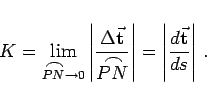
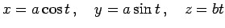
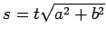
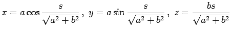
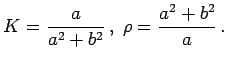

Inhalt Index DeskTop Bronstein

 Geometrie Differentialgeometrie Raumkurven Krümmung und Windung
Geometrie Differentialgeometrie Raumkurven Krümmung und Windung


Krümmung einer Kurve im Punkt P wird eine Zahl genannt, die die Abweichung der Kurve in der unmittelbaren Umgebung dieses Punktes von einer Geraden angibt. Die exakte Definition lautet:
|  | (3.496) |
beschreiben die sogenannte Schraubenlinie als Rechtsschraube.
Wenn ein Beobachter in die positive Richtung der z-Achse blickt, die gleichzeitig Schraubenachse sein soll, dann windet sich die Schraube beim Steigen im Drehsinn des Uhrzeigers. Eine Schraubenlinie, die sich im entgegengesetzten Drehsinn windet, wird Linksschraube genannt.
| Beispiel |
|
Es ist die Krümmung der Schraubenlinie (3.500) zu bestimmen. Wird der Parameter t durch  ersetzt, dann ergibt sich  und gemäß (3.498)  Beide Größen K und |